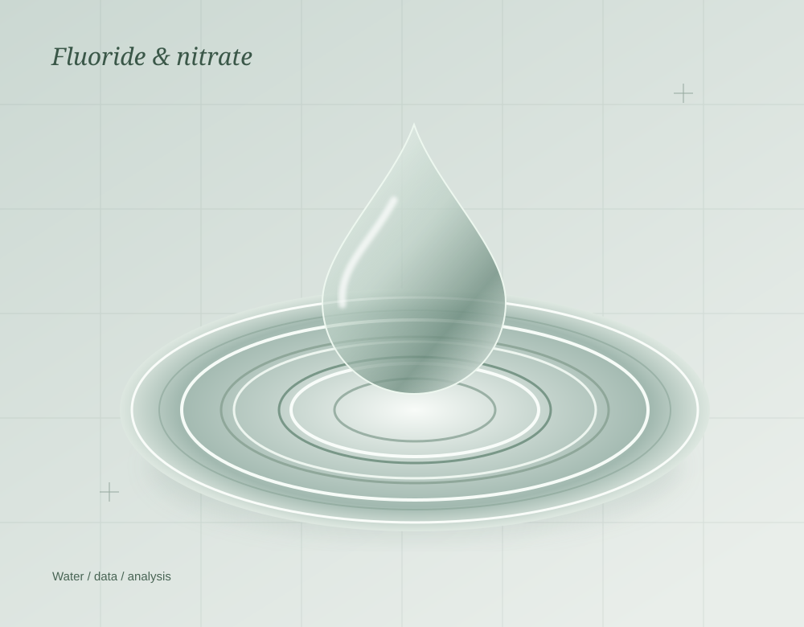

Water quality,
through machine learning.
Collaborated on a project analysing fluoride and nitrate content in water, contributing to data preparation, feature engineering, model development and evaluation.
Project contributions
Used Python and scikit-learn for model development. The CV describes classification and regression approaches, and also lists Principal Component Analysis (PCA).
Tools: Python, scikit-learn, Pandas, NumPy, Matplotlib, Seaborn and ArcGIS.
Intern at Ghana Space Science and Technology Institute (GSSTI), Accra, Ghana. No quantitative results or published project output are supplied in the source.
Read the experience in the CV